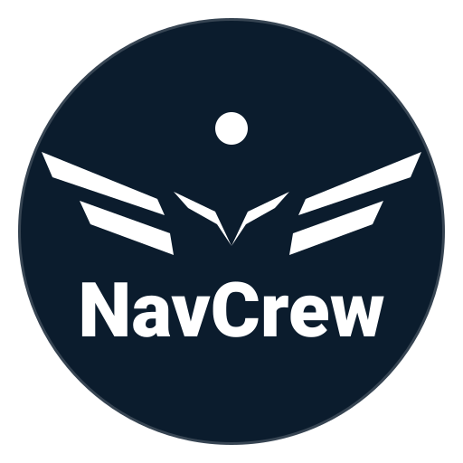

MSFS CoPilot est un assistant de vol connecté en temps réel à Microsoft Flight Simulator (MSFS 2020 & MSFS 2024) via SimConnect. L’application centralise les données opérationnelles du vol et les organise dans une interface structurée : ATC, fréquences, plan de vol intégré, nav log détaillé, météo, carte en temps réel, checklists et phraséologie.
Fréquences organisées par service et contexte. Réglage direct dans le cockpit en un clic. Historique SayIntentions pour retrouver rapidement clairances et instructions.
Import du plan de vol SimBrief, affichage de la route sur la carte, intégration dans le nav log et suivi en temps réel via SimConnect.
Nav log structuré par points de cheminement : distance, altitude, vent, correction de cap, vitesse sol, temps par segment, carburant par segment et cumul.
METAR/TAF départ et arrivée, résumé synthétique (vent/vis/temp/QNH/catégorie) et NOTAM (CFPS/Nav Canada/USA). Analyse vent/piste et recommandations.
Suivi de position en temps réel, route importée, options d’affichage (VFR/IFR selon données disponibles) et informations de navigation.
Checklists par phase et phraséologie structurée pour s’entraîner et standardiser les communications en simulation.
Le paiement s’effectue via Stripe. Un reçu est envoyé par courriel.